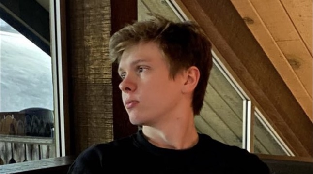

Summary

My name is Craig Fouts and I am a scientist/engineer
interested in deriving mathematical descriptions of
living things. As a computational research engineer in
the SciLifeLab
at Uppsala University, I create statistical models that
characterize morphology in spatial transcriptomics data.
Previously, I worked in the New York Genome Center's
Tech Innovation Lab,
where I helped develop machine learning tools used to
study genomic pathologies in histological spinal cord
sections. Before that, I received my master's in applied
mathematics from Columbia University after studying
computer science and theoretical mathematics at The Ohio
State University. Outside of research, I enjoy inline
skating, playing the violin, and building cool stuff.
Projects
A compilation of my experiments with self-organizing
systems and emergent behavior. Current methods include a
Brownian motion algorithm, a Vicsek active matter model,
and an anihilating random walk. Also a test bed for
RunTime, a basic simulation platform for creating
real-time interactive environments in Jupyter notebooks.
The source code for neural particle automata, a
generalization of neural cellular automata to point
clouds using graph convolutional networks. NPA models
are trained to parameterize nonlinear recurrence
relations that, given an initial "seed" configuration,
produce a target particle configuration using local
message propagation.
My implementations of semantic segmentation algorithms
and spatial topic models applied to point cloud data.
Current methods include variations of latent Dirichlet
allocation, a neural clustering process, and a discrete
variational autoencoder. Also a test bed for PriorLDA,
a nonparametric topic model with encoded spatial priors.
A knowledge-based web application for robotic access and
retreival using IBM Watson. The application provides an
interface for textual communication with a Webots
simulation of two robots collaboratively operating a
warehouse. The user can submit queries about the
contents of the warehouse as well as request items for
retreival.
A webcam-based utility designed to provide an accessible
mode of computer interaction for those with impaired
mobility. The user can use ASL-inspired hand gestures
for 3D control in Autodesk Fusion 360 as well as mouse
control across Microsoft Windows. Developed as part of
the 2021 HackOHI/O competition, winning first place.
Research
Ettore Randazzo, Alexander Mordvintsev, Craig Fouts.
July 24-28, 2023. "Growing Steerable Neural Cellular
Automata." Proceedings of the ALIFE 2023: The 2023
Conference on Artificial Life.
Alexander Mordvintsev, Ettore Randazzo, Craig Fouts.
July 18-22, 2022. "Growing Isotropic Neural Cellular
Automata." Proceedings of the ALIFE 2022: The 2022
Conference on Artificial Life.
Connect